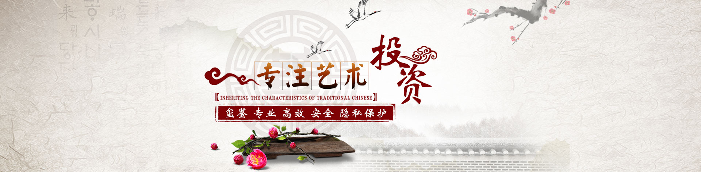
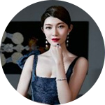
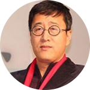
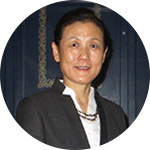
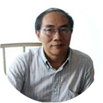
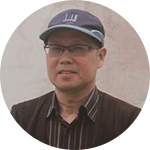
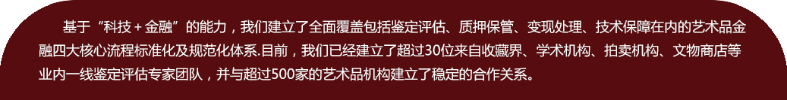

了解玺鉴
玺鉴权威
加入我们


孙星辰
创始人/董事长
美国俄勒冈大学经济学学士，出生自艺术品收藏世家，自小受艺术品文化熏陶，对文玩古珍的收藏，考证，评估经验丰富。工作后一直致力于艺术科技金融、普惠金融领域，以解决艺术品市场“难辨真假、难以估值、难以变现”为己任，通过创新 的业务模式和科技手段，更好的满足艺术品藏家融资需求、降低普通大众对艺术品投资门槛。

刘双舟
首席艺术顾问
资深艺术品金融专家，长期从事艺术市场观察与研究，担任复旦大学艺术金融论坛特约学者，亚洲艺术品金融商学院学术顾问，兼任中央财经大学拍卖研究中心主任，中国广告协会法律咨询委员会主任，中国拍卖行业协会法律咨询委员会委员，文化部艺术品评估委员会委员，全国专业标准化技术委员会委员，北京市盛峰律师事务所律师。
邵春阳
首席法律顾问
毕业于华东政法学院法律系，获法学学士及法律硕士学位，邵律师有着多年国内及海外的学习及工作经验，曾任职于英国西蒙斯律师行，美国盛德国际法律事务所等。2002年4月至今，邵春阳律师在君合律师事务所上海分所任合伙人，代表了多家跨国公司和投资基金为其在华直接投资、收购兼并提供服务。
罗锦松
鉴定专家团队
南通文物商店总经理、南通市公安局文物司法鉴定小组组长、南通市物价局文物定价小组组长。1991年7月毕业于南京大学文物考古学专业，同年8月分配至南通博物苑工作，任社会教育部主任，期间举办各类展览，得以熟悉馆藏文物。1993年5月调职至南通文物商店工作至今，先后任文物部主任、副经理等职，2000年5月任经理（法人代表）。

霍华
鉴定专家团队
南京博物院研究员，1977年到南京博物院工作至今， 主要研究领域为古陶瓷。1993年整理出版张浦生先生《青花瓷器鉴定》一书，1998年出版专著《陶瓷述古》，1999年完成南京博物院《明清瓷器陈列》内容设计，2003年完成徐湖平主编《中国清代官窑瓷器》文字编写，在《考古》、《中国博物馆》等刊物上发表有《关于建立古陶瓷谱系的思考》等文章。
孙晓宏
鉴定专家团队
心远堂主人、资深权威的鉴定专家1959年生，大学文化，从事艺术品收藏、鉴赏三十余年，长期在艺术品市场一线摸爬滚打，涉古今名家之精髓，勤奋专研、锲而不舍，练就'火眼金睛'，对艺术品的真伪、价格、价值有颇深研究。曾多次被应邀参加国内外的艺术研讨会，并在艺术圈中荣获多项艺术荣誉及奖项。
周玉峰
鉴定专家团队
现为南京师范大学美术学院副教授、荣宝斋（上海）拍卖有限公司艺术顾问。1957年生于上海。1984年毕业于南京师范大学美术学院中国画专业，1986年加入中国书法家协会，1994年中央美术学院中国古代书画鉴定专业进修，同年参加故宫博物院首届书画鉴定高级研修班。作品多次参加全国书法篆刻展并获奖，曾在国内外举办个人水墨艺术展。

陈勉
鉴定专家团队
知名书画鉴定家，朵云轩艺术顾问，曾师从著名鉴定家刘九庵先生学习书画鉴定，擅长历代名家书画及海派书画。

徐善
鉴定专家团队
国家一级美术师，江苏省国画院傅抱石纪念馆馆长。曾精研古今众多名家之作，对古今金陵画派诸家研究更深，尤喜傅抱石先生画风。对傅抱石先生的生平、笔墨技巧、创作方法等等都有独到系统的研究。先后在国内外举办过数十次个人画展或联展，有大量的作品在国内外各种展览中展出，并获奖或被中国美术馆、博物馆、纪念堂和国内外国家领导人、收藏家收藏。
